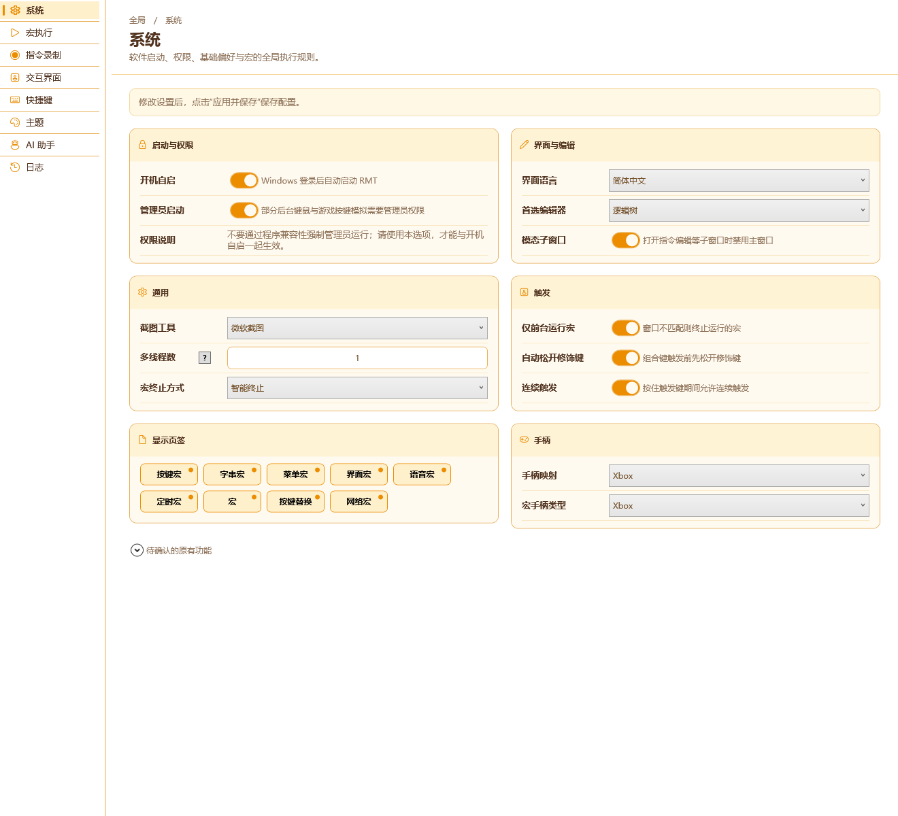
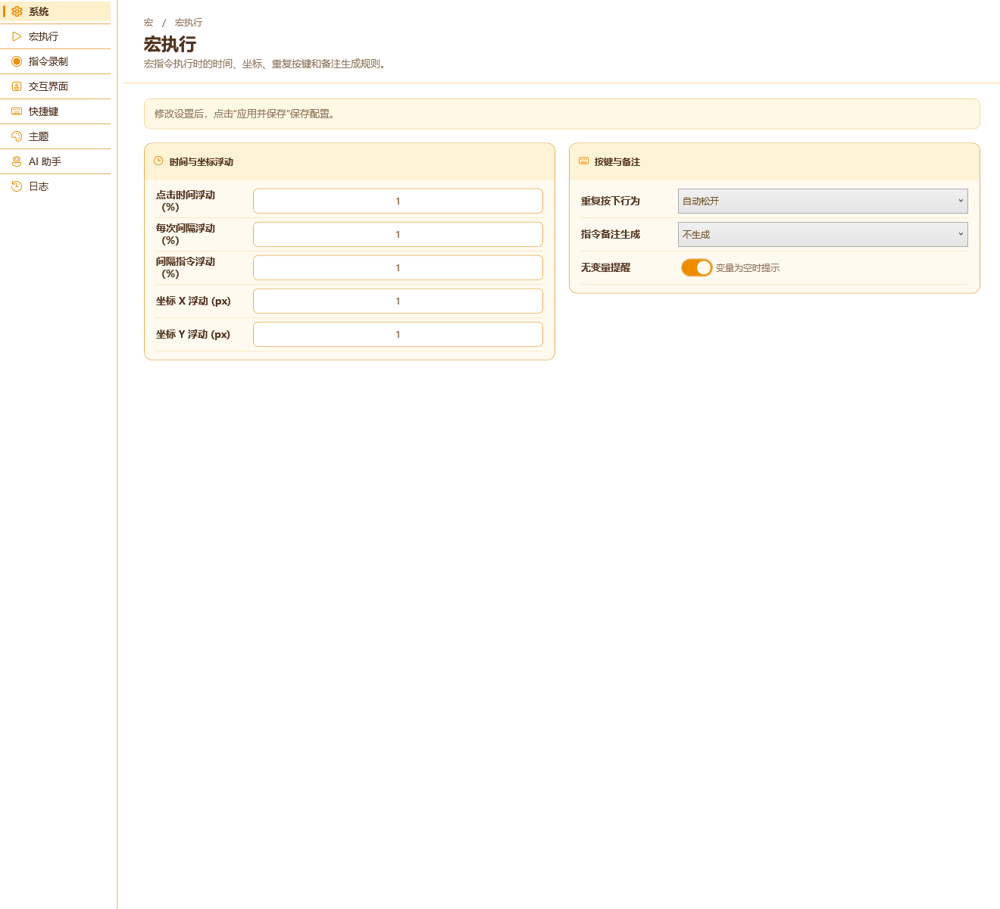
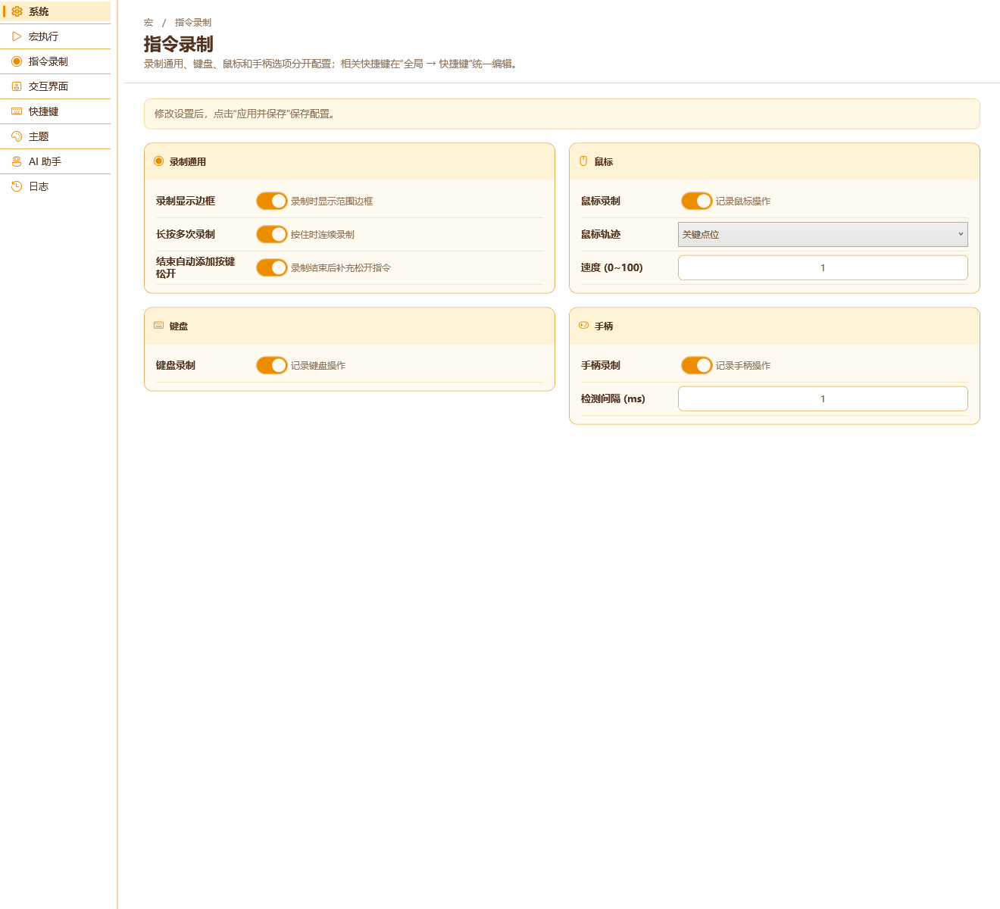
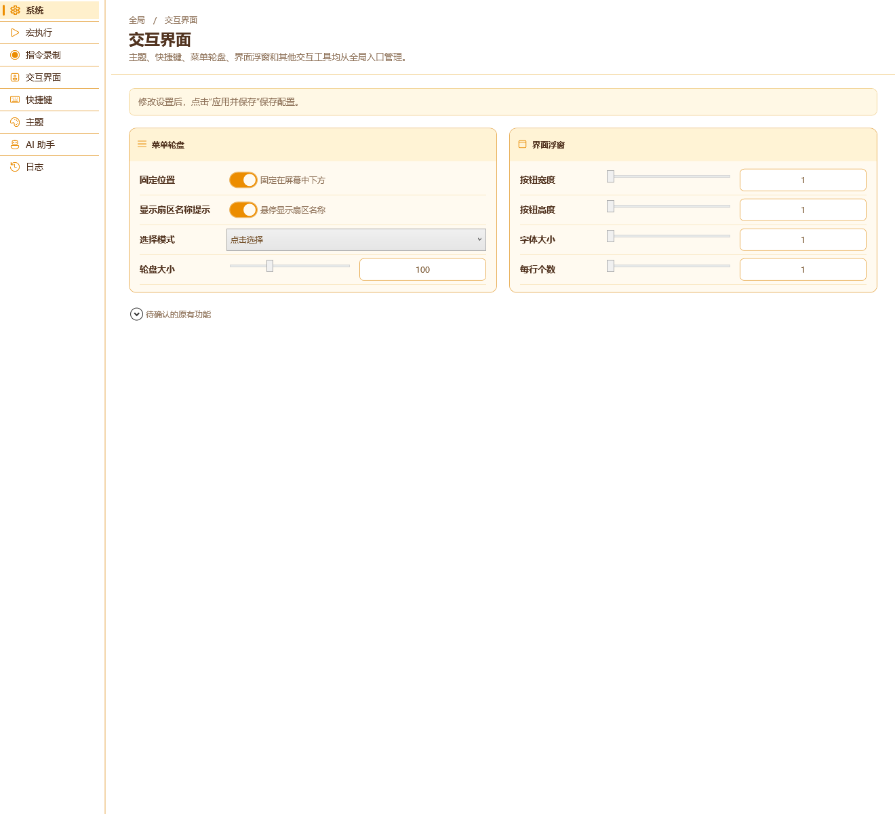
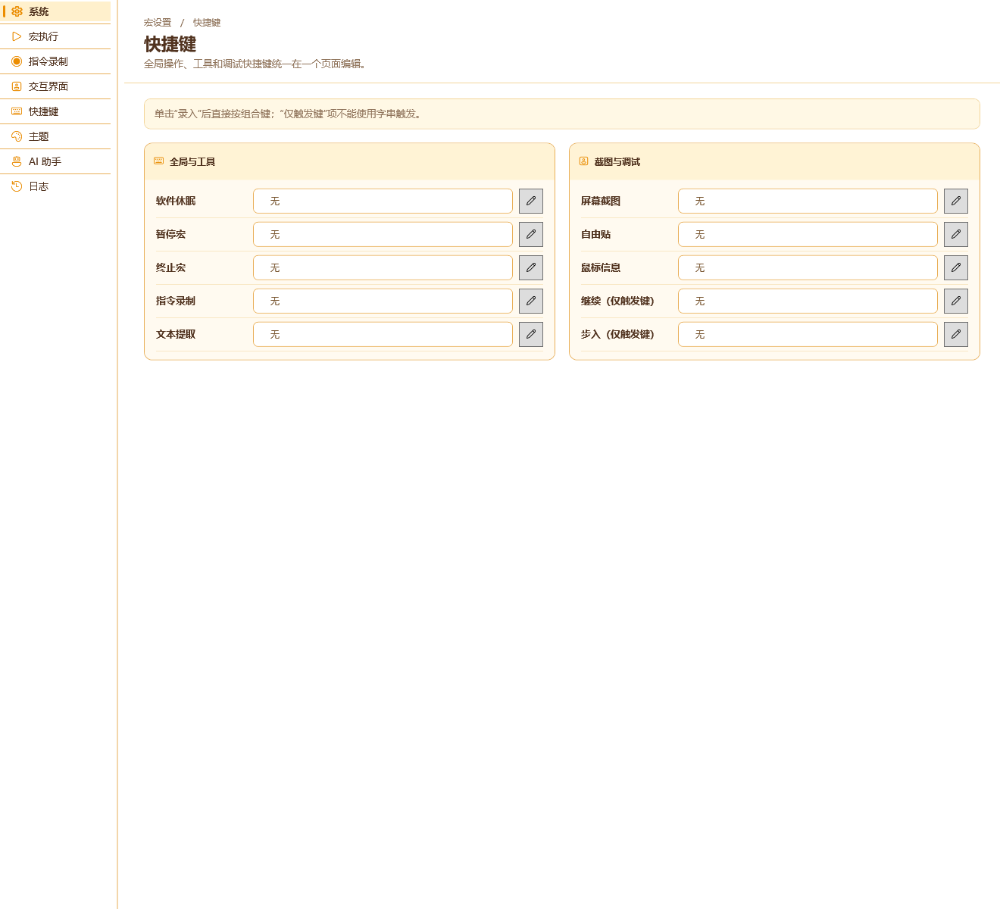
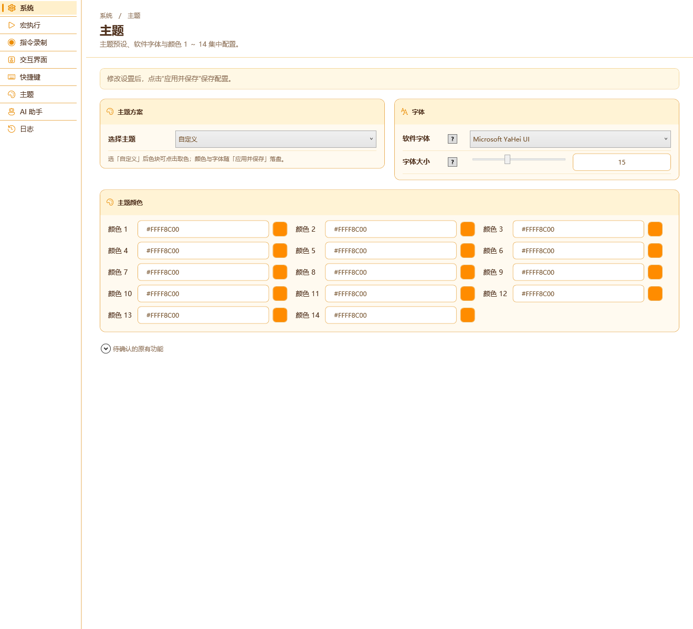
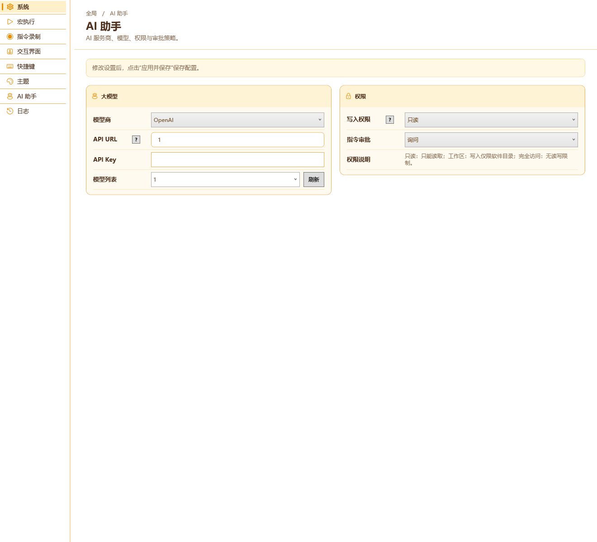
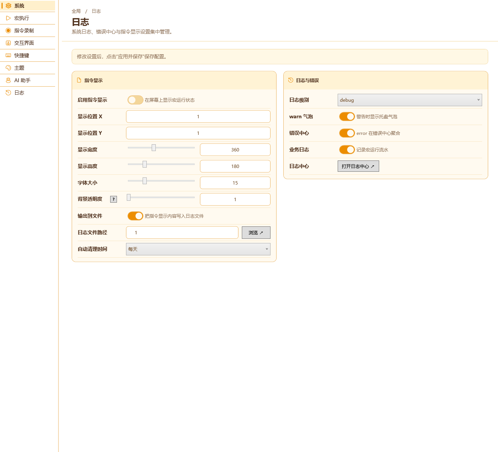

⚙设置页签 — 参考稿对齐处理结果
基准：SettingsLayoutReference.html · 分支：Dev
●右侧内容已按
Web/SettingsLayoutReference.html 重排并逐页核对。下面第 3 节列出「设置界面已有、但参考稿里没有」的功能，请你判断要实现 / 删除 / 隐藏；这些项目前都收在原页面底部的「待确认的原有功能」折叠区里，不会丢。1. 验证结论
全部通过。用的是真实构建流程，不是静态比对：
Test/SettingsLayoutTest.ps1从Main/MainWindowXaml.ahk抽出真实的BuildSettingTab()函数体，注入Test/SettingsLayoutFixture.ahk的桩环境，用真的 AHK 跑一遍拿到 XAML。- 把这份 XAML 交给 WPF
XamlReader.Parse真解析 → 校验收敛：无重复控件名、8 个页面各自包含预期控件、API Key 确实是PasswordBox（已掩码）。 - 在 940px / 1320px 两个宽度下真实 Measure/Arrange，确认每个关键控件都有实际宽度；并校验「日志文件路径」输入框比「浏览」按钮宽。
- 另外单独跑过
AutoHotkey64 /validate RMT.ahk→ exit 0。
最终输出：PASS: actual AHK builder, WPF load, eight page mappings, unique names, password masking and 940/1320 layout.
2. 八个页面的实际渲染








说明：截图由 SettingsLayoutTest.ps1 -Render 直接在 WPF 里渲染真实控件生成（1320×1200），非手绘示意图。
3. 需要你判断：设置界面已有、参考稿里没有的功能
这些功能目前仍然可用，只是参考稿没有对应位置，所以我把它们收进了对应页面底部的「待确认的原有功能」折叠区。请按需选择 保留 / 实现进参考稿版式 / 删除或隐藏。
| 页面 | 功能 | 控件名 / 说明 | 建议 |
|---|---|---|---|
| 系统 | 仓库共享 | BtnShareLogin 登录论坛、BtnShareLogout 退出登录、TxtShareLoginState 登录状态。参考稿「系统」只有 6 张卡，无共享入口。 |
建议实现进参考稿：它属于全局功能，建议在「系统」加一张「仓库共享」卡。 |
| 交互界面 | 网络宏 | EditNetPort 监听端口（1-65535，默认 16888）、BtnNetworkSetting 保存端口并重启监听。参考稿「交互界面」只有菜单轮盘 + 界面浮窗。 |
建议实现进参考稿：加「网络宏」卡。 |
| 交互界面 | 界面浮窗的 4 个附加项 | UIPanelShowOnActiveCon 界面激活时显示、UIPanelDefaultPosCon 出现位置、UIPanelOffsetXCon 位置偏移X、UIPanelOffsetYCon 位置偏移Y。参考稿的「界面浮窗」只列了 按钮宽度/高度/字体大小/每行个数。 |
建议实现进参考稿：参考稿漏了这 4 项，建议补进「界面浮窗」卡。 |
| 交互界面 | 右键菜单（有序列表编辑器） | 4 个列表 GenActiveList/GenAvailList/BranchActiveList/BranchAvailList + 8 个按钮 BtnGenUp/Down/Add/Remove、BtnBranchUp/Down/Add/Remove；配置键 GeneralContextMenu/BranchContextMenu/SharedCopy。 |
建议实现进参考稿：这是完整功能，单独一张「右键菜单」卡。 |
| 主题 | 软件背景颜色、背景图 | EditSoftBGColor、EditBackImage + BtnBackImageBrowse / BtnBackImageClear。参考稿「主题」只有 主题方案/字体/主题颜色。 |
建议实现进参考稿：可并入「字体」卡或新增「背景」卡。 |
4. 参考稿有、当前未实现的部分
| 参考稿元素 | 状态 | 说明 |
|---|---|---|
| 右侧底部页脚： 「尚未保存的修改仅影响当前预览。」+ 恢复此页默认 + 应用并保存 | 未实现 | 「应用并保存」主界面左侧已有全局按钮；「恢复此页默认」需要为 8 个页面各建一份出厂默认值表，属于新功能，等你确认后再做。 |
| 左侧栏顶部「RMT 默认配置」资料卡 | 按你要求已删除 | 你之前明确要求去掉。 |
| 左侧栏底部「打开 RMT 配置目录」按钮 | 按你要求已删除 | 你之前明确要求去掉。 |
| 页头（面包屑 / 标题 / 描述）与提示条 | 保留 | 你早前要求去掉，但本轮要求「完全参照参考稿」，参考稿里这两块都在，故按本轮要求恢复。如需再次去掉请说一声。 |
5. 本轮核对过的对齐明细
| 页面 | 与参考稿的对齐情况 |
|---|---|
| 系统 | 6 张卡与参考稿一致；补上「权限说明」信息行；「显示页签」由开关改为参考稿的页签芯片（9 项）；「按键与备注」按参考稿移出到「宏执行」。 |
| 宏执行 | 时间与坐标浮动（5 项）+ 按键与备注（重复按下行为 / 指令备注生成 / 无变量提醒）；「业务日志」按参考稿移到「日志」页。 |
| 指令录制 | 录制通用 / 鼠标 / 键盘 / 手柄；默认值与真实配置键一致。 |
| 交互界面 | 菜单轮盘（4 项）+ 界面浮窗（4 项）；其余见第 3 节。 |
| 快捷键 | 按参考稿拆成「全局与工具」5 项 +「截图与调试」5 项；取值改为只读输入框 + 录入图标按钮；「继续/步入」标注（仅触发键）。 |
| 主题 | 主题方案（10 个预设）+ 字体（字体/字号）+ 主题颜色 1~14（三列网格 + 取色块）。 |
| AI 助手 | 大模型（模型商 / API URL / API Key / 模型列表+刷新）+ 权限（写入权限 / 指令审批 / 权限说明）；API Key 已改为掩码输入框（PasswordBox）。 |
| 日志 | 指令显示（10 项，含「日志文件路径」+ 浏览按钮）+ 日志与错误（日志级别 / warn 气泡 / 错误中心 / 业务日志 / 打开日志中心）。 |
6. 本轮改动文件
Main/MainWindowXaml.ahk— 设置中心（左导航 + 8 页）全部实装与对齐。Main/RMTUtil.ahk—OnSaveSetting补齐内联设置项的落盘（CMDLog* / MenuWheel* / UIPanel*），并接入主题落盘。Test/SettingsLayoutFixture.ahk、Test/SettingsLayoutTest.ps1— 无头验证脚手架（新增）。Web/SettingsLayoutResult.html（本页）、Web/SettingsLayoutResult/*.png— 处理结果与渲染图（新增）。
生成方式：真实 AHK 构建 → WPF 解析/布局 → 渲染截图；配置键与既有行为均未改变。